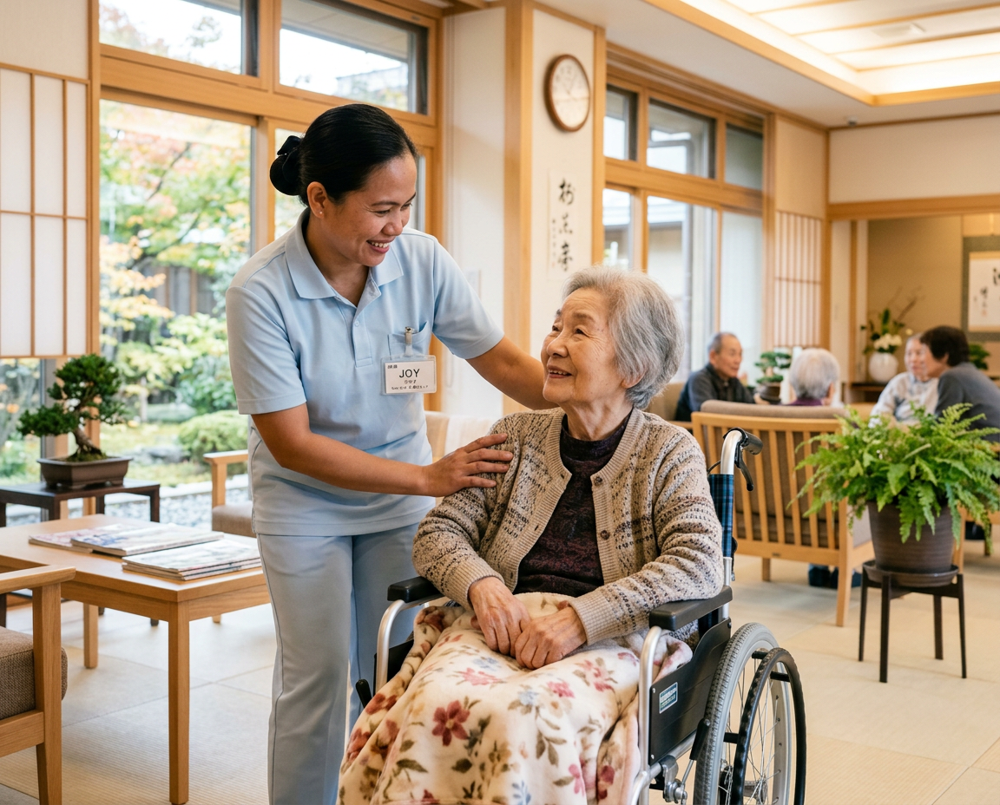
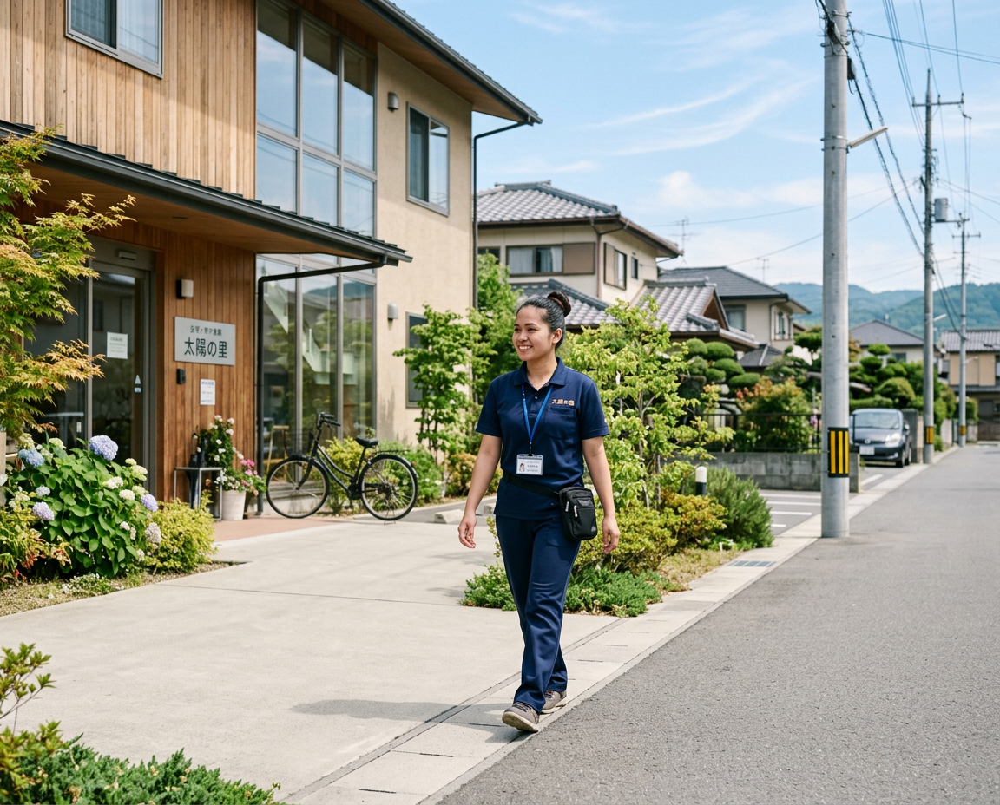
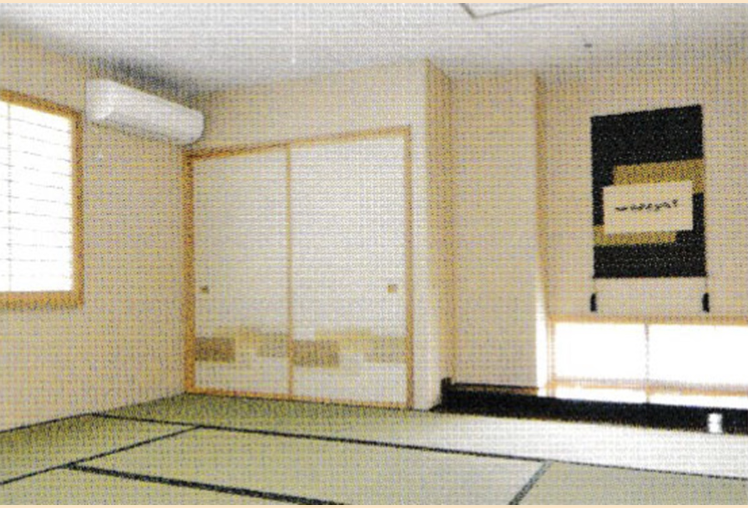
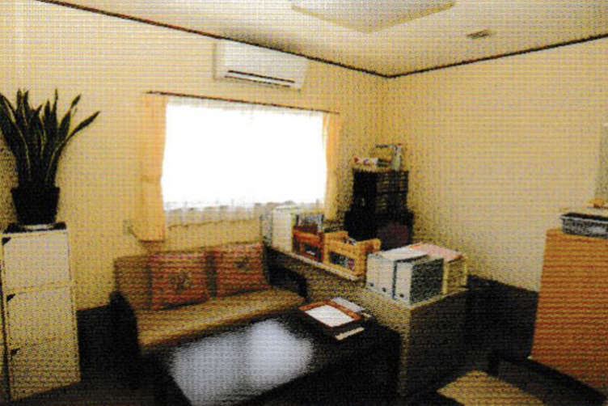

渡航前
- 無料登録と書類確認
- 制度説明（特定技能、条件など）
- 介護施設とのオンライン面接調整
- ビザ申請サポート（登録支援機関）

以下は目安です。日本の労働法により、最低賃金や労働条件は保護されています。

給与
¥180,000–220,000 ／月
初任給の目安です。施設や地域によって異なります。
住居費
¥20,000–25,000 ／月
2DKを2人でシェアするケースが一般的です。企業によっては家賃補助があります。
手取りの目安
¥155,000–195,000 ／月
家賃を差し引いた後の目安です。税金や保険料により実際の金額は変動します。
渡航までの期間： 面接合格後、約2.5〜4ヶ月
面接： フィリピンからZoomでオンライン面接
フィリピンでの介護職の給与目安
₱15,000–20,000／月
日本での介護職の給与目安
¥180,000–220,000／月
実際に当社の介護人材が勤務している日本の介護施設です。

基本条件を満たしていますか？該当する項目を確認してください。N4レベルが不安な場合でもご相談ください。
N4未取得でもご相談ください。学習方法や次のステップをご案内します。
8つのステップで進みます。各ステップで誰が担当するのかも明確です。

応募者側でお願いしていること：登録、書類提出、オンライン面接の参加、必要に応じた日本語学習の継続です。
ステップ1〜4：登録、書類確認、説明会、面接サポート（フィリピン側）
ステップ6〜7：ビザ、空港送迎、生活サポート。就労開始後も定期フォロー
ステップ4・5・7・8：面接、雇用契約、住居、入居、勤務開始サポート
私たちと提携先が、登録から日本での生活開始までサポートします。
介護人材が日本で住む住居の例です。


実際にこのプロセスで日本に来たフィリピン人介護人材の体験談です。
以下の方々は、このプログラムで日本で実際に働いている介護職です。
合法的で透明な手続きで進めることが重要です。注意すべき点はこちらです。
仕事や契約が決まる前に金銭を要求する場合は注意してください。正当な紹介では費用はかかりません。
まだ興味がありますか？